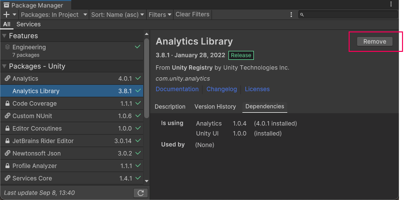

Remove a UPM package from a project
When you “remove” a UPM packageA Package managed by the Unity Package Manager. Refer to Packages.
See in Glossary from your project, the Package Manager is actually removing the project’s direct dependencyA direct dependency occurs when your project “requests” a specific package version. To create a direct dependency, you add that package and version to the dependencies property in your project manifest (expressed in the form package_name@package_version). More info
See in Glossary from your project manifestEach Unity project has a project manifest, which acts as an entry point for the Package Manager. This file must be available in the <project>/Packages directory. The Package Manager uses it to configure many things, including a list of dependencies for that project, as well as any package repository to query for packages. More info
See in Glossary. The result of removing the direct dependency varies, based on the dependencies for the package you are removing:
- If there are no other packages or feature setsA feature set is a collection of related packages that you can use to achieve specific results in the Unity Editor. You can manage feature sets directly in Unity’s Package Manager. More info
See in Glossary that have a dependency on this package, any Editor or run-time functionality that it implemented is no longer available in your project. For more information about direct and indirect dependenciesAn indirect, or transitive dependency occurs when your project requests a package which itself “depends on” another package. For example, if your project depends on thealembic@1.0.7package which in turn depends on thetimeline@1.0.0package, then your project has an direct dependency on Alembic and an indirect dependency on Timeline. More info
See in Glossary, refer to Dependency and resolution. - If another installed package or an installed feature set depends on the package you are trying to remove, this procedure removes only the dependency from your project manifest. The package itself and all its functionality is still installed in your project, and appears in the In Project list context with the dependency icon .
Before you begin
Make sure you understand these important notes before you begin:
- Use this procedure to remove a package only if you added it to the current project by installing it, such as (but not limited to) Install a feature set, Install a UPM package from a registry, Install a UPM package from Asset Store, and installing custom packages. Don’t use this procedure to attempt to remove asset packagesA collection of files and data from Unity projects, or elements of projects, which are compressed and stored in one file, similar to Zip files, with the
.unitypackageextension. Asset packages are a handy way of sharing and re-using Unity projects and collections of assets. More info
See in Glossary that you imported to your project by using Download and import an asset package. For information about removing asset packages that you downloaded and imported, refer to Remove imported assets from a project. - If you use this procedure to remove a UPM package that you installed from a registry or installed from the Asset Store, the operation removes the package from the current project. It doesn’t remove the same package that might exist in other projects. It also doesn’t remove the package from the global cache; this action isn’t supported by the Package Manager, and manually manipulating the global cache is discouraged.
- If you use this procedure to remove a package that you embedded in your project, the Package Manager deletes the entire package folder from your computer. However, removing packages installed from any other source (including local packages) removes only the reference to the package in the manifest but leaves the package itself and its contents intact.
Procedure
To remove an installed package:
-
Open the Package Manager window and select In Project from the PackagesPackages are collections of assets to be shared and re-used in Unity. The Unity Package Manager (UPM) can display, add, and remove packages from your project. These packages are native to the Unity Package Manager and provide a fundamental method of delivering Unity functionality. However, the Unity Package Manager can also display Asset Store packages that you downloaded from the Asset Store. More info
See in Glossary drop-down menu.
Switch the context to In Project Select the package you want to remove from the list of packages. The details view now displays that package’s information.
-
Click the Remove button. If this button is:
- Not displayed, you might be viewing the My Assets list. See Before you begin.
- Disabled, you can’t remove this package. Hover over the button to find out why you can’t remove the package. For more information, see Locked and non-removable packages.

When the progress bar finishes, the package disappears from the list.
If you want to restore a removed UPM package, follow the instructions to install a UPM package from a registry or install a UPM package from the Asset Store.
Note: You can remove multiple packages with one click by using the multiple select feature. For more information, refer to Perform an action on multiple packages or feature sets.
Locked and non-removable packages
You can only remove packages which are not required by another package or a feature set. The Package Manager enforces this by disabling the Remove button for all required packages.
| Required by: | Description: |
|---|---|
| A feature set | If a feature set requires the package, it displays a lock icon ( ) in both the list view and in the details view. The details view also displays the name of the feature set that requires the package below the package name in the details view. ) in both the list view and in the details view. The details view also displays the name of the feature set that requires the package below the package name in the details view. However, even if you click the Unlock button, you still can’t remove the package from your project until you remove all feature sets which require it. Unlocking the package lets you request a different version for your project, but it still doesn’t let you remove it. |
| Another package | If one or more packages require the selected package, the Remove button is disabled. You can find the name of the package that has the dependency from the Dependencies tab in the details view. If you don’t need the other packages, you can remove them and the Package Manager automatically removes this package too. |
Note: You can unlock multiple packages with one click by using the multiple select feature. For more information, refer to Perform an action on multiple packages or feature sets.